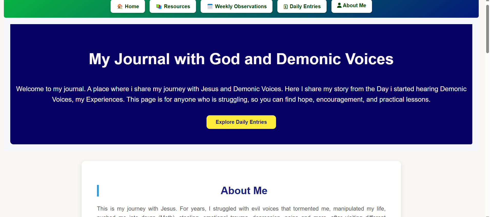

MY FEATURED PROJECT


📝 Journaling Website
A calm and peaceful journaling app built for reflection and gratitude. It helps users express their thoughts freely and track emotional growth day by day.
- Languages: HTML, CSS, JavaScript
- Goal: Create a soft, minimal digital diary for anyone who values peace of mind
- Highlights: Daily entries, gentle colors, auto-save, light/dark toggle